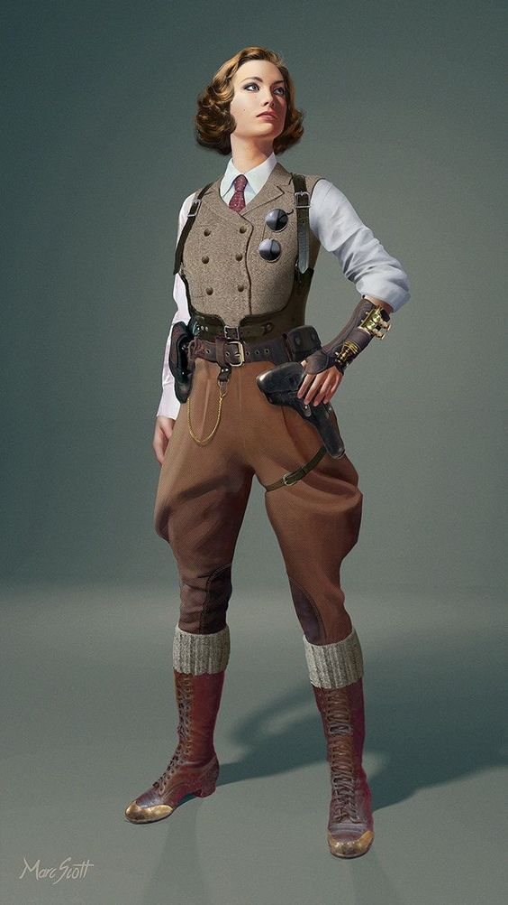

- 
-
Polly Kimber
Após o sumiço do pai, Gregory Kimber, a jovem arqueóloga Polly Kimber retorna à Resiliatown disposta a encontrá-lo.
Com a cidade vivendo o caos, Polly se vê sozinha nessa busca. Será que Kimber solucionará esse mistério e encontrará o paradeiro de seu pai?